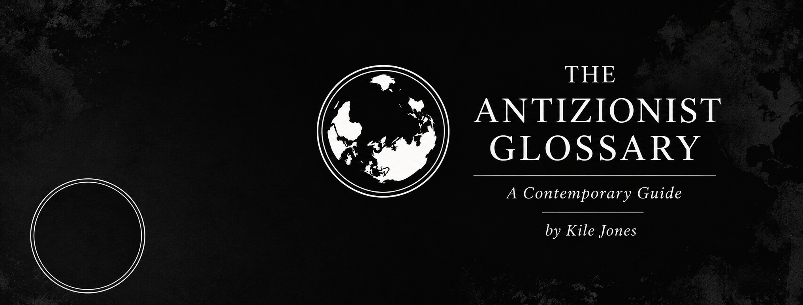

A Contemporary Guide
Words do not merely describe conflicts.
They assign roles, define enemies, and fight their own wars. This glossary maps the language of modern antizionism.

Author
Kile Jones
Kile Jones researches and writes on modern antizionism, history, and the uses of language, working alongside the Jewish community to fight Jew-hatred. He holds two master’s degrees, an M.T.S. and S.T.M. in Religious Studies, from Boston University. A long-time bridge-builder, Jones has created interfaith programs and projects including “Interview an Atheist at Church Day,” and founded and edited the Claremont Journal of Religion at the Claremont Colleges. His work has appeared in philosophy, religion, and society publications, including Philosophy Now, The Humanist, The Routledge Guide, and Free Inquiry. He writes at The Inverted World: kilejones.substack.com.
Endorsement
“In this useful and timely glossary of modern anti-Zionist vocabulary, Mr. Jones has created something we all need: a detailed guide explaining the history, nuances, and functions of this movement's vernacular. I highly recommend this well-written, thoughtful, and increasingly important, compendium to the language of anti-Zionism: a set of terms that impacted my life greatly. Kile Jones' guide can help all of us better understand and discredit the terms used by enemies of Jews and Israel world round.”
Natan Sharansky
Soviet dissident, Israeli politician, and author